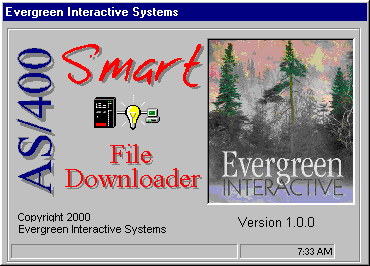
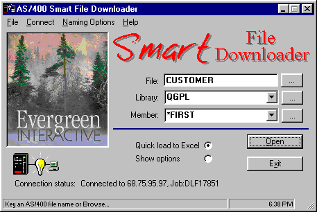
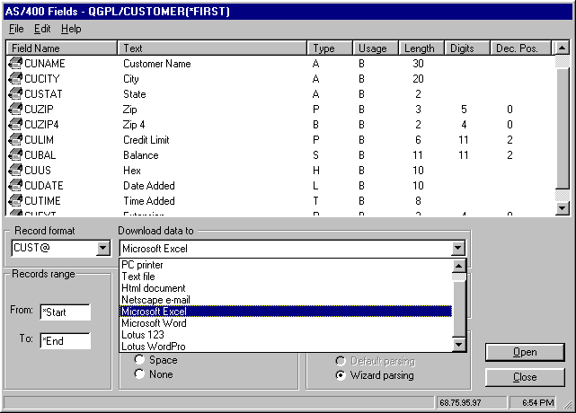
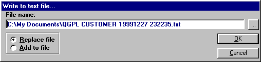

Evergreen Interactive Systems
Announces
The AS/400 Smart File Downloader
For Windows 95/98/NT

Download All Types of AS/400
Data to Your TCP/IP Connected PCs
Free! Full Function 30-Day
Evaluation Version
Click
here to download the evaluation version
Easily and Correctly Download AS/400 Physical
and Logical File Data To:
-
Microsoft Excel 95, 97 or 2000
-
Microsoft Word 95, 97 or 2000
-
Netscape, Outlook or Outlook Express e-mail
-
PC Text Files
-
HTML Documents
-
Lotus 1-2-3
-
Lotus WordPro
-
PC Printer
-
PC Clipboard
What the Smart File Downloader Does
By popular demand, the AS/400 Smart File Downloader has been
developed to correctly interpret and download all types of AS/400 data
and to import the data into major PC applications like Excel, Word, Lotus,
Netscape, Outlook or to PC text or ".csv" files. Packed numeric,
binary, hex and date/time field values are correctly interpreted with a
leading positive/negative sign inserted for proper interpretation by PC
spreadsheet applications like Excel.
An authorized user may browse AS/400 libraries and files, select a relative
record number range and do one of the following:
Display the contents of a selected physical or logical file for identification
or to copy file data to the PC's clipboard.
Load an AS/400 file directly into Microsoft Excel or Word or Lotus 1-2-3
or WordPro. Excel/Word/Lotus 1-2-3/WordPro is launched by the Downloader
and the AS/400 file content is loaded into an appropriate spreadsheet or
document, ready for editing, formatting, printing, etc.
Quick print a file on the PC's local printer (no AS/400 printer configuration
necessary.)
Copy the selected file data to PC text file(s). Users can *ADD to or *REPLACE
PC text file records. The AS/400 file's attributes may be used as
the PC text file's name for archiving of AS/400 data.
Download AS/400 file contents directly to an email message or attachment
Invoke Excel's built-in text-to-columns converter to explicitly specify
parsing parameters.
If an advanced user employs a pre-recorded Excel or Word macro to automate
processing within Excel or Word over AS/400 file data, he/she may specify
the macro's name from the Downloader. The Downloader will load the AS/400
file and run the macro over the data while the user watches.
Download the selected physical or logical data to an HTML file. You
can even add AS/400 file data to an existing HTML document, to merge AS/400
data with your company's web page.
Run the entire process automatically, in batch using a PC script file or
from an AS/400 interactive CL program.
Only $295. per Workstation!!
Using the Smart File Downloader
When launched, the AS/400 Smart File Downloader
will examine your PC to see which PC applications are installed, and options
allowing their use will be presented (see figure 3.)
The Downloader will then present the screen shown
in figure 2:

Figure 2 – Key in an AS/400 physical or logical file
or you may browse libraries and files.
Key in the name of an AS/400 physical or logical
file or click the dot dot dot button to browse the AS/400's libraries and
files. Once you select a file you'll see the field selection screen shown
in figure 3.

Figure 3 – Selecting the fields to be downloaded and
the PC application that is to receive the data.
Loading an AS/400 File to a PC Text
File
You may load AS/400 file contents to a PC text file,
with comma, tab or space delimiting. The AS/400 library, file and
member names may optionally be used to create the PC text file's name.
When the "Text file" option is selected, the Downloader’s
text file dialog box will be displayed as shown in figure 4.

Figure 4 – The Downloader text file dialog box.
Loading an AS/400 File to Microsoft
Excel
You may also import the contents of an AS/400 file into
a Microsoft Excel spreadsheet without leaving the Downloader. The Downloader
will check to see if Excel is already running. If not, the Downloader will
start a new instance of Excel. The downloaded data will then be imported
into the Excel spreadsheet by commands issued from the Downloader. In this
manner you may load several AS/400 files into Excel concurrently – each
as its own spreadsheet. Very handy for cutting and pasting among files.
Because the most common use of downloaded data is in an
Excel spreadsheet, the Smart File Downloader includes a "Quick load to
Excel" option (figure 1) which will bypass the field selection screen,
and launch Excel and import the AS/400 data.
The Downloader can optionally present Excel's parsing Wizard so your
users can explicitly define parsing specifications!
Once started, Excel will remain active even if you’ve ended
the Downloader.
Note: The AS/400 Report Downloader will work with Excel
5.0, Excel 97 and Excel 2000. The Downloader will detect Excel and the
version present on the PC.
Loading an AS/400 File to Excel
and Running a Macro
Through ActiveX Automation technology, the Smart File
Downloader is able to send commands to Excel telling it to load and run
a pre-recorded Excel macro over an imported AS/400 file – all without leaving
the Downloader.
Macro instructions are created by the user and stored
on the PC under a given name. You may specify the macro’s spreadsheet file
and name from the Downloader and after the AS/400 data is imported, the
macro is run. Use this feature to further automate the downloading process.
Typically macros will be used for:
Parsing the file data into cells
Enhancing appearance
Adding more totals to the report
Scanning and replacing specific content
Final printing
So with this feature of the Downloader you can record your
Excel operations into a macro once and use the macro every time you process
the same data.
Loading an AS/400 File to Microsoft
Word
You may also import the contents of an AS/400 physical
or logical file into a Microsoft Word document without leaving the Downloader.
The Downloader will check to see if Word is already running. If not, the
Downloader will start a new instance of Word. The downloaded file data
will then be loaded into a Word document by commands issued from the Downloader.
In this manner you may load several AS/400 files into Word at the same
time – each as its own document. Very handy for cutting and pasting among
files.
Once started, Word will remain active even if you’ve
ended the Downloader. Normally, Word will be minimized to the task bar
by the Downloader after the loading is finished.
Note: The AS/400 Smart File Downloader will work with
MS Word 6, 7, Word 97 and Word 2000. The Downloader will detect Word and
the version present on the PC.
Loading an AS/400 File to Microsoft
Word and Running a Macro
Through ActiveX Automation technology, the Downloader
is able to send commands to MS Word telling it to load and run a pre-recorded
Word macro over an imported AS/400 file – all without leaving the Downloader.
Macro instructions are created by the user and stored
on the PC under a given name. You may specify the macro’s document file
and name from the Downloader and after the AS/400 data is loaded, the macro
is run. Use this feature to further automate the downloading process. Typically
macros will be used for:
Enhancing appearance
Adding features to the report
Scanning and replacing specific content
Final printing
So with this feature of the Downloader you can record your
Word operations into a macro once and use the macro every time you process
the same data.
To specify a macro to be run select "Microsoft Word" from
the fields selection display (see figure 3.). The Downloader’s macro dialog
box will be displayed allowing you to select a Word template file and macro
name.
See Also
Year 2000 Compliance
- Specifications regarding year 2000 compliance for the Downloader
Downloader Security -
Controlling
user access to AS/400 files through the Downloader
Requirements
PC running Windows 95/98/NT
TCP/IP connection to the AS/400 (Ethernet, Token Ring,
Internet or Point-to-Point Dial-up)
OS/400 V3R2, V3R6, V3R7 or V4R1 and up
Pricing
and Availability
| Licenses |
U.S. Funds |
| 1 to 4 PCs |
295. ea.
|
| 5 to 9 PCs |
275. ea.
|
| 10 to 14 PCs |
250. ea
|
| 15 Seats and Up (site license) |
3700.
|
The AS/400 Smart File Downloader is available by download
and/or express mail.
The AS/400 Smart File Downloader
comes with a money-back satisfaction guarantee.
Contacting Evergreen Interactive
Systems
-
Toll free: 1.888.821-8218
-
send us email!

Evergreen Interactive Systems
P.O. Box 389
Nine Mile Falls, WA
99026-0389